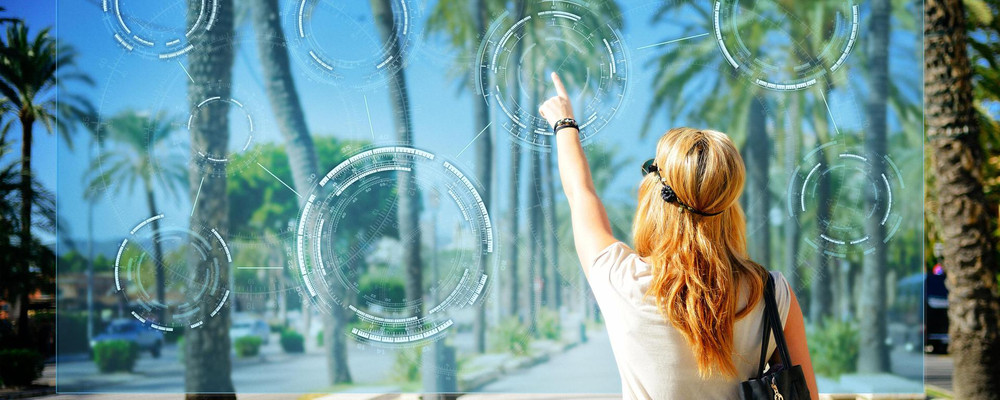
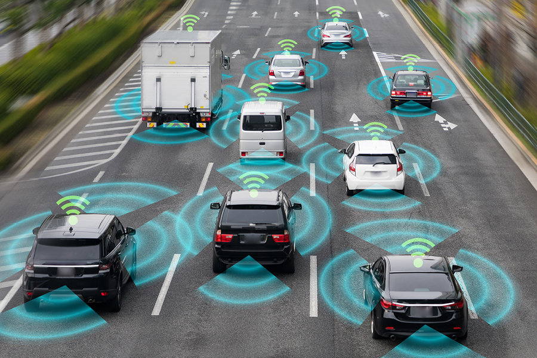
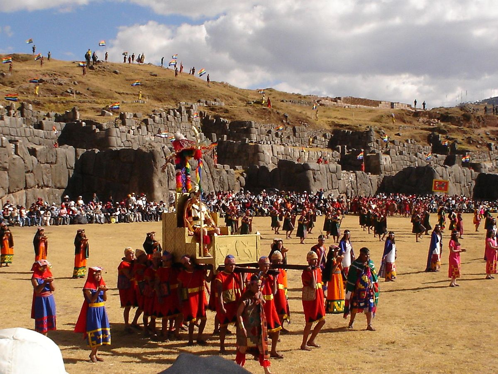
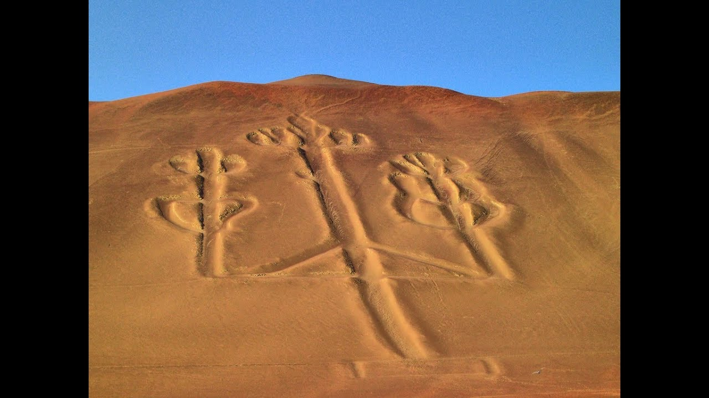
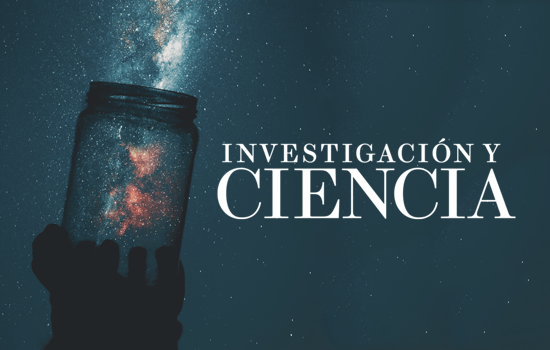
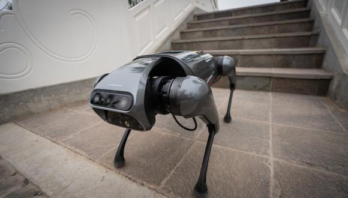

TECNOLOGÍA
Realidad Aumentada
La realidad aumentada también supone la
incorporación de datos e información digital en un entorno realpor medio del reconocimiento de patrones que se realiza mediante un software.
En otras palabras, es una herramienta interactiva que está dando sus primeros pasos alrededor del mundo y que en unos años se verá en todas
partes, corriendo y avanzando, sorprendiendo y alcanzando todas las disciplinas: videojuegos, medios masivos de comunicación, arquitectura,
educación,televisión (gafas 3D), turismo,
literatura, cine e incluso, en la medicina. Llevará un mundo digital inimaginable al entorno real.
Vehículos Autònomos
Los vehículos perciben el entorno mediante técnicas complejas como láser, radar, lidar, sistema de posicionamiento global y visión
computarizada. Los sistemas avanzados de control interpretan la información para identificar la ruta apropiada, así como los obstáculos y la
señalización relevante.Los vehículos autónomos generalmente son capaces de recorrer carreteras previamente programadas y requieren una
reproducción cartográfica del terreno,
con lo cual si una ruta no está recogida por el sistema se puede dar el caso que no pueda avanzar de forma coherente y normal.
CULTURA
Inty Raimi
Inti Raymi (en español fiesta del sol), es una ceremonia andina celebrada en honor de Inti (el dios sol), que se realiza cada solsticio de invierno (24 de junio, en el hemisferio sur). Los actuales pobladores de los países andinos, con la presencia de visitantes nacionales y extranjeros, continúan realizando esta tradición, ahora considerada una ceremonia de interés turístico.1 Al tratarse de una tradición inca, el Inti Raymi se mantiene como un rito para muchas otras comunidades indígenas de legado incaico, algunas de las cuales están asentadas en otras partes del antiguo territorio inca, como en Perú, Ecuador, Bolivia, Argentina, Colombia y Chile.
 El candelabro de Paracas
El Candelabro de Paracas, es un geoglifo famoso, ubicado en la costa norte de la península de Paracas, en la provincia de Pisco, dentro del departamento de Ica, en Perú. Sus grandes dimensiones y su diseño sobre la arena permiten distinguir una relación con las líneas, geoglifos de Nazca y de pampas de Jumana. El Candelabro mide 180 metros de largo y se calcula que tiene unos 2500 años. Su significado sigue siendo un misterio.
SALUD
FITNESS
Reducir los riesgos de padecer obesidad El pasado año se determinó que cerca del 13% de la población tiene sobrepeso y que España es el segundo país de Europa con más obesos. El fitness es una práctica muy buena para reducir estas cifras puesto que es capaz de alejar a las personas del sedentarismo y acercarlas a una rutina saludable. Reducir las posibilidades de padecer osteoporosis El fitness estimula las células de la estructura ósea, un beneficio que evita el debilitamiento de los huesos, reduciendo considerablemente las posibilidades de padecer osteoporosis, una enfermedad relacionada con la disminución de la masa ósea que aumenta los riesgos de padecer roturas en los huesos, sobre todo en las mujeres a partir de la mediana edad.
ACTIVIDAD FÍSICA
La actividad física regular, como caminar, montar en bicicleta, pedalear, practicar deportes o participar en actividades recreativas, es muy beneficiosa para la salud. Es mejor realizar cualquier actividad física que no realizar ninguna. Al aumentar la actividad física de forma relativamente sencilla a lo largo del día, las personas pueden alcanzar fácilmente los niveles de actividad recomendados. La inactividad física es uno de los principales factores de riesgo de mortalidad por enfermedades no transmisibles. Las personas con un nivel insuficiente de actividad física tienen un riesgo de muerte entre un 20% y un 30% mayor en comparación con las personas que alcanzan un nivel suficiente de actividad física.
INVESTIGACIÓN Y CIENCIA
Inty Raimi
El mundo se dispone a entrar en el tercer año de la pandemia de COVID-19 sin un final a la vista, y un reto inmediato es comprender mejor el impacto de la variante ómicron, detectada por primera vez a fines de noviembre, así como la amenaza que plantea su rápida propagación. Los primeros resultados indican que las vacunas son menos efectivas contra esa variante, y los científicos aún se afanan por averiguar más sobre la gravedad de la enfermedad que causa. En 2022, los investigadores y las autoridades sanitarias también continuarán vigilando la posible aparición de nuevas variantes del virus SARS-CoV-2, así como los efectos a largo plazo en las personas que han superado la infección.
NOTICAS |
||||
| ¿Qué es la tecnología Deepfake y cómo está siendo aprovechada actualmente? |
BTS VLOG: Jimin crea brazaletes únicos en el mundo en nuevo video de Bangtan |
|||
|  | Un perro robot aprende a caminar en solo una hora y con menos energía |
Premios Juventud: CNCO anuncia su separación pero tendrán un último disco y gira |
||